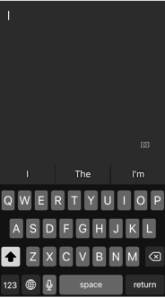

Задачу приведения своих дел в порядок и управления временем я поставил перед собой много лет назад. Легко вести дела, когда ты работаешь токарем на заводе и ездишь отдыхать по путёвке в Крым и в телевизор. Но как всё успеть, если жизнь складывается иначе.
Когда количество проектов становится больше пяти, и тебе приходится решать задачи от настройки сервера и вёрстки газеты до сдачи бухгалтерского баланса и проектирования веб-сервисов, без системы становится не просто сложно работать, но и держать всё это в голове.
С тех пор моя система управления временем прошла несколько этапов, подбирались инструменты, корректировались правила. В последнее время она практически не меняется, поэтому пришла пора поделиться методикой с читателями. Хотя сейчас это скорее система управления задачами.
Управление временем по-старому
Прежде я какое-то время использовал лист А4 на столе, куда записывал все дела и вычёркивал их по выполнении. Одно время даже отправлял сам себе письма. Каждое письмо, таким образом, становилось делом. Дело сделано — письмо можно удалить. Весьма глупая, признаться, затея.
Потом я составлял планы на неделю, примерно прикидывая хронометраж и раскидывая их по дням недели в Гугл.Календаре.
Моя неделя выглядела примерно так
Это хорошая диаграмма, если ты маркетолог или начальник, которому нужно загрузить подчинённых. На деле такой подход создаёт только иллюзию занятости и вносит дополнительный хаос. Срываясь, по разным причинам, одно мероприятие ломает всю сетку.
Я пытался создавать страховые «карманы» («буфер»), но это спасало слабо. Слитые дела приходилось переносить дальше, напряжение росло, к концу недели график выглядел значительно хуже. В воскресенье вечером я садился и раскидывал накопившиеся дела на будущую неделю, и ситуация повторялась.
В конце концов этой системе пришлось эволюционировать. Важным решением было планировать дела на день, но не привязывать их к времени.
Тайм-менеджмент по-новому
Моя сегодняшняя методика во многом перекликается с методикой Getting Things Done, ставшей популярной в последнее время. Но дошёл я до неё скорее сам, поэтому и знаменитую книгу Дэвида Аллена я бросил читать на первой трети.
Важной частью организации рабочего процесса являются два дополнительных правила.
— я не читаю, не смотрю, не слушаю новости. Для меня это не только гигиена, это и правило тайм-менеджмента.
— я перевожу телефон в режим «Не беспокоить» с 19 до 10 часов.
Omnifocus
В качестве программы управления делами я выбрал заточенный под Apple Omnifocus.
[appbox appstore id867299399 screenshots]
У меня есть версия для MacOS, использую в основном её. Установленный (и купленный за $40) Omnifocus для iPhone практически не использую.
[appbox appstore id904071710 screenshots]
У Omnifocus есть несколько аналогов — Things, Wunderlist (подходит и для Android и Windows, есть бесплатная версия).
Инбокс
Краеугольным камнем методики является инбокс. Инбокс — это то место, которое собирает все ваши дела, планы и мысли. Инбоксом может быть что угодно. У большинства людей ещё лет 10-15 назад это был ежедневник или планнинг на стол. Ежедневниками я никогда не любил пользоваться никогда, да и планнинги тоже уже вышли из моды.
Задача инбокса — освободить ресурсы человека. Вам не нужно держать в голове никакие задачи, кроме текущей. Нет необходимости писать что-то на липких листочках, ставить крестики на руке, накручивать себя по поводу того, где найти деньги на кредит, который платить в конце месяца. Все задачи — в инбоксе. Туда же отправляются идеи и мысли, которые тоже могут стать задачами.
Правило #1. Инбокс должен быть только один
Из этого правила есть следствия
Ничего лишнего в почте
Уже почти год я придерживаюсь техники пустого инбокса в части электронной почты. В воскресенье вечером я всегда полностью очищаю почтовый ящик. Письма являются теперь только письмами. На письма я либо отвечаю, либо превращаю их в задачи.
Никаких задач по телефону
Достаточно сложное для некоторых контрагентов правило. Всегда легко взять трубку (в одной компании даже запрограммировали клавишу на мой сотовый), но я упорно не принимаю задачи по телефону.
- телефонный разговор нельзя прочитать ещё раз
- телефонный звонок сложно конвертировать в Задачу
- я могу ехать за рулём и забыть о задаче
- в половине случаев, после звонка по телефону вообще не нужно ничего делать. Человек это понимает только, когда начнёт описывать задачу в письме.
На этапе помещения задачи в инбокс нет разницы какого она объёма, характера, срока выполнения и качества оформления. Вы просто помещаете в инбокс всё подряд.
Есть три пути задаче попасть в мой инбокс:
- Вы можете поставить её в системе управления задачами, которую я сделал для своих клиентов
- Вы можете отправить мне письмо (я либо отвечу на него, либо перешлю на специальный адрес, чтобы оно попало в инбокс)
- Я могу записать задачу себе сам
Для записи задач в инбокс я использую простенькую программу для iPhone Note
Я просто печатаю текст, потом делаю слайд вверх и письмо отправляется по специальному адресу, сохраняясь при этом в моём инбоксе.

Правило #2. Инбокс нужно разбирать
Следующим этапом (первой задачей системы) является разбор инбокса. В куче информации и планов нет никакого смысла, поэтому раз в день (утром или вечером) инбокс необходимо разбирать.
Omnifocus, как, уверен, и аналоги, позволяет делать повторяющиеся задачи.
Задаче присваивается Проект (в данном случае Блог), Контекст (Дом), срок выполнения, флаг важности
Правило #3. Не планируйте поминутно
Если у задачи пока нельзя определить срок выполнения (это любые задачи, которые нет нужды закрыть в течение этой недели), то срок выполнения не обозначаем.
Контекст — достаточно субъективная категория. У меня есть контексты: Офис (нужно сделать в офисе), Дом (можно сделать дома), Копирайтинг (написание новостей, статей, публикация фотографий), Лягушка (большое дело, за которое не хочется браться), Рутина (периодические несложные задачи) и т.п.
Среди рутинных проектов есть:
- разобрать по субботам фотографии с телефона (сами фотографии автоматически выгружаются на компьютер),
- протегировать фотографии в домашнем архиве за июль 2008 года (каждую неделю я разбираю 1 месяц),
- проверить бэкапы серверов,
- зарядить powerbank
- заплатить девушке, которая наполняет openkemerovo.ru,
- положить деньги на карту для АЗС,
- очистить почтовый ящик,
- передать показания счётчика воды в ТСЖ,
- и даже побриться.
Проектом является любой долгосрочный проект. Привязывать задачи к проекту необходимо по двум причинам. Во-первых, это позволяет их группировать, во-вторых, каждый проект необходимо просматривать (иначе задачи рискуют остаться там навсегда).
Правило #4. Проектам нужно ревью
Каждый день недели я просматриваю ряд проектов, у которых подошёл срок review, отбираю задачи, которые готов решать, ставлю им срок.
Правило #5. Запланировал — сделай
К счастью, я не робот, и факапы случаются. Бывает, я сливаю задачу в нужный день, тогда она отмечается красным. К примеру, в прошлую субботу я планировал поменять лампочку подсветки номера на машине, но так пока и не поменял.
Таким образом, моё утро выглядит примерно так:
- В Инбоксе я разбрасываю накопившиеся за вчерашний день задачи по проектам, присваивая им сроки, где это необходимо.
- В Обзоре проектов я присваиваю задачам, которыми готов заняться в ближайшие два-три дня сроки выполнения.
- Затем я перехожу в Прогноз, где меня ждёт список задач на сегодня, включающий в себя список задач, которым был обозначен срок выполнения сегодня и повторяющихся задач.
Этот список будет у меня перед глазами целый день
Не могу сказать, что описанный метод — панацея. Я по-прежнему, порой (значительно реже), не выполняю Задачи в срок. По-прежнему, приходится вставлять ОЧЕНЬ СРОЧНЫЕ ЗАДАЧИ в Сегодня.
Уверен лишь в одном, ни одна задача при моём подходе не теряется. Благодаря отсутствию необходимости держать список дел в голове я могу посвятить больше времени и своих ресурсов работе, а, значит, работать с большим КПД, а в освободившееся время, к примеру, писать в блог.